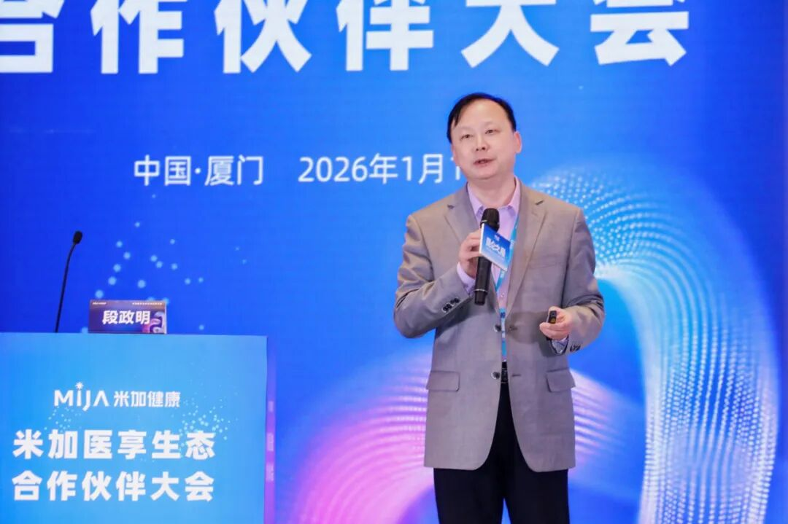
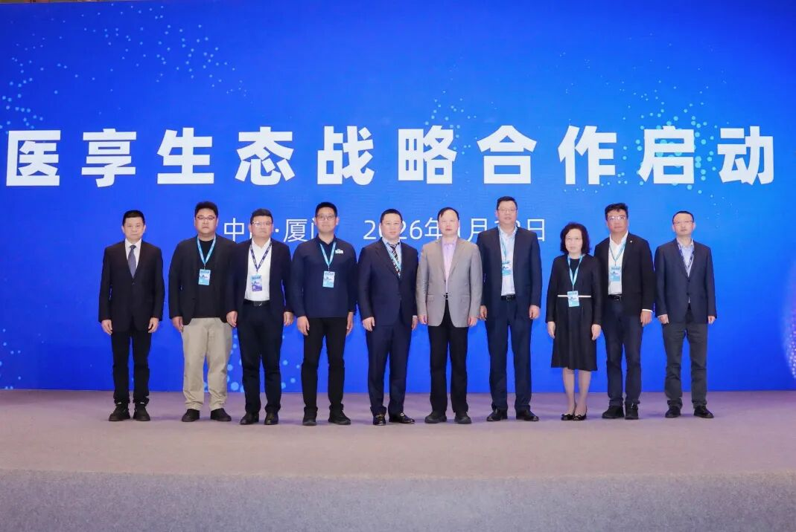
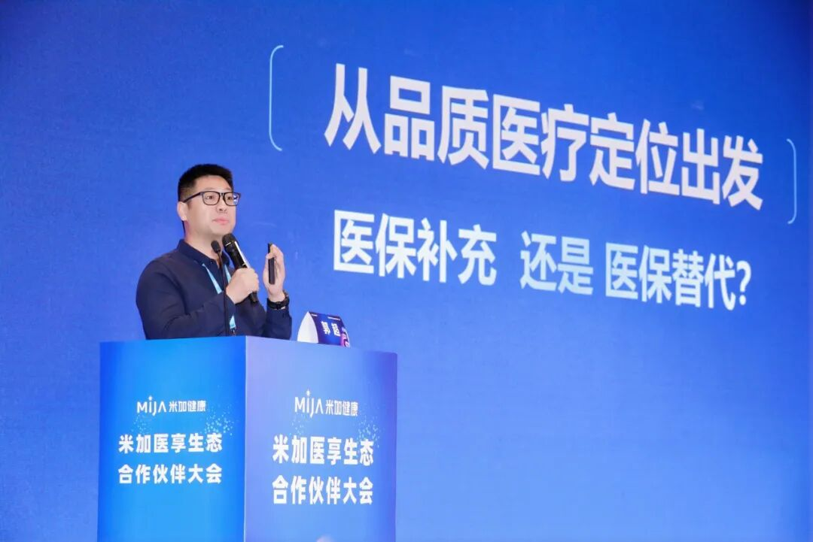
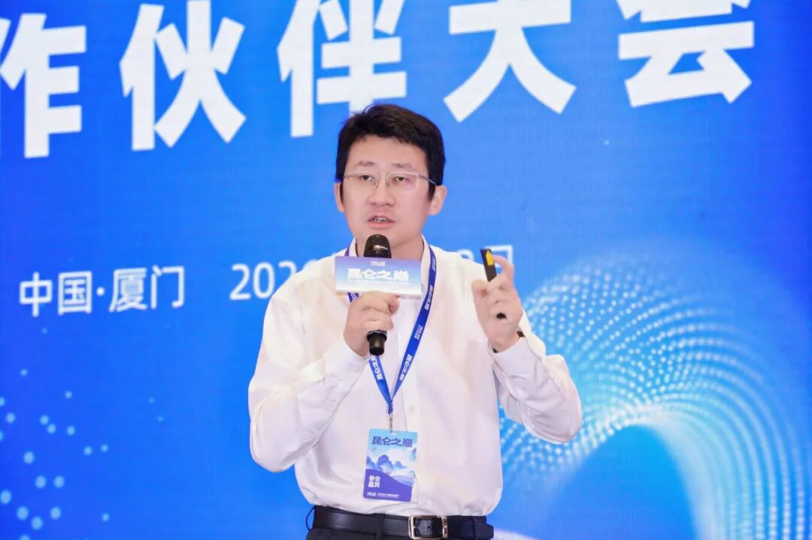

米加医享生态合作伙伴大会｜重塑商保就医新体验，共启医险融合新格局
2026年1月13日，米加医享生态合作伙伴大会在厦门隆重举行。来自全国100余家保险机构，以及医疗、科技等领域的专家学者与行业代表齐聚一堂，共探医险融合的发展路径与创新实践。现场座无虚席，充分彰显各方对构建高品质商保医疗生态的高度共识与协同意愿。

米加医享生态合作伙伴大会现场
当前，医险融合已从理念共识加速迈向深度落地。如何推动商业保险真正嵌入医疗服务全链路，使其成为提升患者就医体验与优化系统运行效率的关键力量，成为本次大会核心议题。
政策引领｜夯实多层次医疗保障体系根基
大会伊始，中国医院协会医院医疗保险专业委员会主任委员段政明从政策与实践双重视角，深入剖析“1+3+N”多层次医疗保障体系建设的内涵与路径。他指出，商业医疗保险作为多层次医疗保障体系的重要组成部分，应在扩大医保目录外费用保障、延伸管理服务、加强风险控制等方面发挥更大作用，切实补位基本医保、响应多元需求。

中国医院协会医院医疗保险专业委员会主任委员段政明
重磅发布｜米加医享四大服务重塑商保就医品质
会上，米加健康正式发布“米加医享产品服务体系”，并携手中国医院协会医院医疗保险专业委员会主任委员段政明、厦门大学附属第一医院副院长彭小松、厦门大学附属中山医院总会计师郑明端、厦门弘爱医院院长应敏刚，以及复星联合健康保险总裁赖晓辉、太平洋健康保险副总经理郭超、泰康人寿健康险事业部总经理李明强、明亚保险经纪副总裁李曦、中国平安财险个人非车及意健险部副总经理高生兵，共同启动米加医享生态战略合作。
这标志着米加健康正式迈入打通医险壁垒、整合优质资源、构建“保险+医疗+服务”一体化生态的新阶段。

米加医享生态战略合作启动仪式
直面痛点｜“有保赔不到、好药开不出”困局
随着医保控费深化，进口原研药、创新疗法等高价值医疗项目普遍被集采药和常规治疗方案替代，一方面有效降低了整体医疗费用，另一方面也加剧了患者对品质医疗受限的焦虑：
有保赔不到：DRG/DIP支付方式约束下，诊疗路径趋于标准化，患者自费支出减少，商保理赔难以触发；
好药开不出：医院受集采指标、自费占比、药事管理等多重限制，患者即便持有商业保险，仍难以自由使用目录外的先进药品或疗法。
当商业保险在风险补偿与优质医疗获取两大核心功能上持续弱化，其市场吸引力与可持续性将面临严峻挑战。
转机正在显现。随着《商业健康保险创新药品目录》发布及“三除外”政策推出，商业保险首次获得了独立于基本医保的用药保障空间。然而，政策红利要转化为患者真实可及的服务，关键在于打通“进院、开方、支付”三大堵点——药品能否进入医院采购目录？医生能否合规处方？费用能否便捷结算？
破局之道｜从“保单承诺”到“就医现实”
米加医享以三大核心能力打通商保服务最后一公里：
商保通数据中台：基于与1000+三甲医院的医保合作及服务规则沉淀，构建覆盖“识别—服务—结算”的商保协同平台；
CIDN商保医生网：通过院级集中管理与医生品牌共建，汇聚“商保友好型”专家，形成可信赖、可调度的专属医生网络；
米宝商保服务中心：围绕诊前咨询、诊中协助、诊后提醒，提供贯穿诊疗全程的专业人工专导服务。
基于此，米加医享重新定义商保价值：客户购买的不再仅是一张保单，而是一套融合优质医疗资源、专业就医协助与智能健康服务的“线上+线下”一体化解决方案，并创新打造四大专属服务：
医生选得对：精准匹配CIDN网络内权威专家，告别“盲目就医”；
好药开得出：优质资源直达，破解“资源短缺”；
入院有人帮：米宝全周期就医专导，化解“就医焦虑”；
出院即报销：商保一站式结算，终结“报销繁琐”。
2025年，米加医享服务已落地30余家三甲医院，成功跑通全流程服务闭环。2026年，米加医享将加速拓展，计划年内覆盖全国100家优质医疗机构，让更多商保患者在家门口即可享受高品质、高效率的一站式就医服务。
生态共筑｜深化医险协同，提升服务能级
在规模化落地背景下，如何构建可持续、高协同的医险融合生态成为关键议题，来自医疗机构、保险企业与保险经纪的三位代表从不同维度分享了务实而前瞻的实践经验。

厦门大学附属第一医院副院长彭小松
厦门大学附属第一医院副院长彭小松在《探索商保患者精细化服务新路径》主题演讲中，介绍了医院在政策落地、流程优化与多方协作方面的具体举措。他强调，将保险服务前置到临床服务环节，为商保患者建立独立于医保控费体系的服务通道，是构建以患者为中心的多层次医疗服务体系的关键。

太平洋健康保险股份有限公司副总经理郭超
太平洋健康保险股份有限公司副总经理郭超在《以“品质医疗”为核心打造医疗险产品新格局》演讲中提到，保险行业需从保障升级转向服务整合，实现产品-渠道-客户精准匹配，让好医、好药、好服务触手可及，真正实现“医保+商保”双轨并进，助力多层次医疗保障体系建设。

明亚保险经纪营销中心助理总监兼综合业务部经理刘存鑫
明亚保险经纪营销中心助理总监兼综合业务部经理刘存鑫在《医疗险服务院内院外一体化新模式》演讲中指出，当前医疗险常因院内院外衔接割裂，导致客户即便持有中高端医疗险也难享品质医疗。唯有通过院内资源直连、专属驻点协同、系统化流程管理，才能真正实现医、险、患三方共赢。
大会特设圆桌论坛，聚焦“厦门模式：医险协同打造品质医疗新体验”。与会嘉宾系统梳理了厦门在商保一站式结算、中端医疗服务落地等方面的落地经验，并就产品创新、服务整合与市场发展展开深度探讨，为全国医险融合提供了可复制、可推广的实践范式。

嘉宾参与圆桌讨论
从政策指引到服务落地，从单点试点到百院联动，米加健康正推动商业保险从“支付工具”向“健康伙伴”跃迁。未来，随着医险协同不断深化，一个以患者为中心、以品质医疗为内核、以高效服务为支撑的健康新生态，正在加速成型。
本文由 ShawnCH（何智翔）轉發，透過微信聊天記錄自動提取並整理。 原文連結：https://mp.weixin.qq.com/s?__biz=Mzg5ODUxMTkwOQ==&mid=2247497398&idx=1&sn=d997c839883ae1c16ad9666ed206b41a&chksm=c1631d23b68b128bc765e32bae2ce5f8399978f3e80bca2c9922937caeb95f8ab7df9d5b37dc&mpshare=1&scene=1&srcid=01131aiQE4QgYlXRqam6YnlY&sharer_shareinfo=9be3b667098e3535da3d1063847a42a9&sharer_shareinfo_first=9be3b667098e3535da3d1063847a42a9#rd